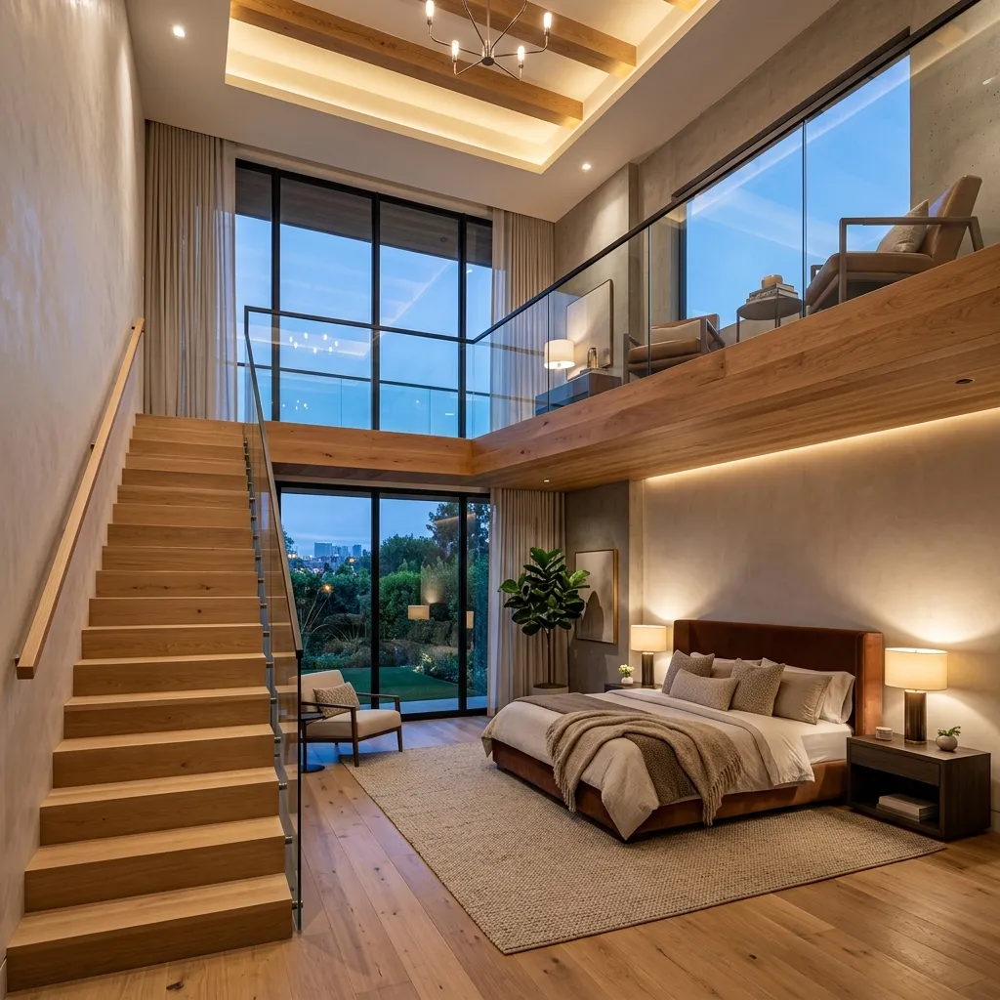
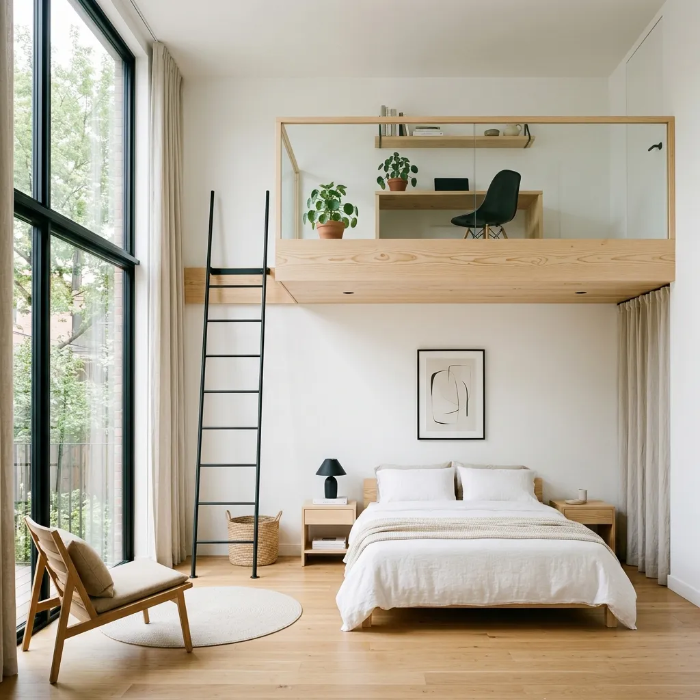
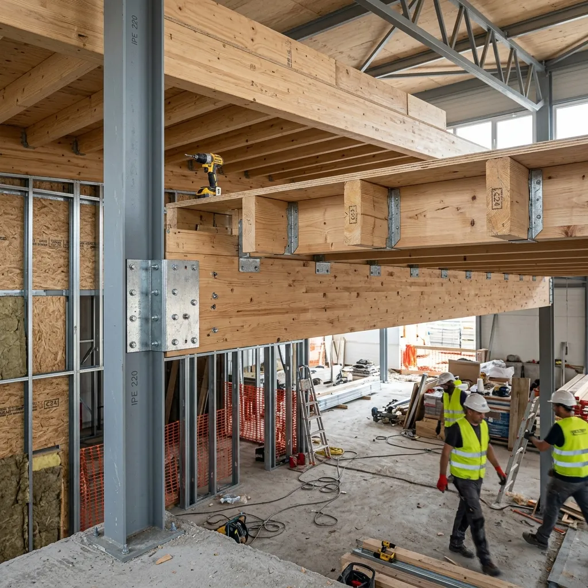

ENTREPISOS
DE MADERA
Maximizá la superficie útil de tu dormitorio o estudio. Creamos soluciones en altura combinando la calidez natural de la madera con la rigidez estructural que tu hogar merece.
La forma más elegante y eficiente de ganar metros cuadrados en casa
En las construcciones actuales de San Miguel de Tucumán y Yerba Buena, la altura útil de los ambientes suele subutilizarse. Diseñar un entrepiso de madera en habitaciones de techos altos permite duplicar la funcionalidad física sin comprometer la ventilación. Es el recurso arquitectónico perfecto para incorporar un escritorio de home office, un vestidor privado o una zona de juego elevada para niños.
En Constructora ByB, no consideramos el entrepiso de madera simplemente como una adición de carpintería, sino como un elemento estructural integrado. Calculamos rigurosamente las cargas vivas y muertas, aseguramos los anclajes perimetrales e instalamos tratamientos acústicos que disminuyen la transmisión de ruidos del piso superior.
La madera maciza no solo soporta carga, sino que aporta aislamiento térmico y valor estético.
Explorá los distintos tipos de entrepisos de madera
Hacé clic en las pestañas para descubrir las características visuales y técnicas de cada diseño.

Entrepiso Moderno y Minimalista
Diseñado con líneas puras, utilizando maderas claras de alta calidad (como el pino seleccionado o eucalipto tratado) y fijaciones invisibles. Combina perfectamente con barandas de vidrio templado o cables de acero tensores para dar sensación de liviandad. Es el modelo preferido para lofts contemporáneos y estudios de home office donde se prioriza la luminosidad ambiental.
Ficha Técnica de Materiales y Cargas
| Línea de Diseño | Madera Principal | Capacidad de Carga | Tratamiento Requerido | Espesor Recomendado (Machimbre) |
|---|---|---|---|---|
| Moderna / Minimalista | Pino Elliotis compensado / Eucalipto Grandis | Hasta 200 kg/m² | Laca poliuretánica al agua satinada | 1 pulgada (22mm o 25mm) |
| Rústica / Tradicional | Quebracho Colorado / Vigas de Pino Oregón | Hasta 280 kg/m² | Impregnante insecticida + barniz mate | 1 1/2 pulgada (32mm) |
| Industrial / Mixta | Tableros de Madera dura / Eucalipto alistonado | Hasta 350 kg/m² (con perfiles de acero) | Plastificado de alto tránsito para tránsito fluido | 1 pulgada o multilaminado fenólico 18mm |
¿Por qué el Steel Framing es el aliado perfecto para diseñar un entrepiso?
Si estás proyectando tu nueva casa desde cero o planificando una ampliación en planta alta en Tucumán, el sistema de Steel Framing es la base de ingeniería ideal. Al ser un sistema liviano pero estructuralmente robusto, las paredes y vigas de acero galvanizado pueden soportar e integrar las vigas de madera de tu entrepiso de forma directa sin requerir columnas intermedias.
- check_circle Sin columnas molestas: El acero perimetral del Steel Framing absorbe las cargas, dejando la habitación de la planta baja 100% libre y limpia.
- check_circle Rapidez de montaje: Se monta en seco, reduciendo los tiempos de obra en hasta un 60% en comparación con la mampostería tradicional húmeda.
- check_circle Cimientos más ligeros: La combinación de Steel Framing y entrepiso de madera aligera significativamente el peso total del edificio, abaratando los costos de excavación y hormigonado de cimientos.

Unión de vigas de madera con anclajes estructurales de acero.